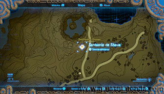
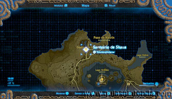
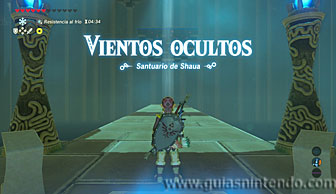
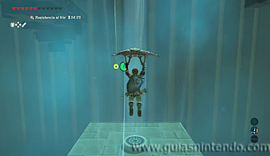
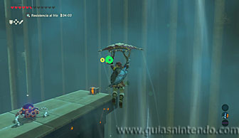
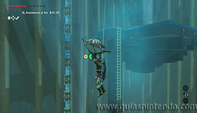
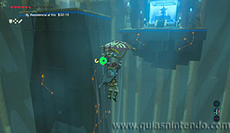
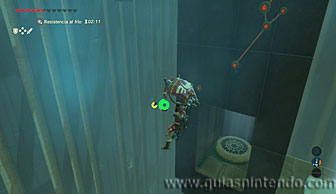
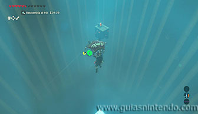
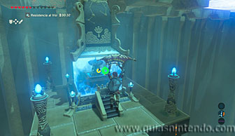

Puedes entrar en este santuario desde que llegas a la región de la torre de Tabanta. Está en las afueras del Poblado orni, donde comienza la zona de nieve (necesitarás elixires o el atuendo orni para no pasar frío).

Una vez dentro tendrás que ir avanzando usando tu paravela en las corrientes de aire ascendentes.

Así podrás ir subiendo hasta que encuentres una plataforma donde hay un miniguardián y un cofre. Bájate ahí, destruye al miniguardián y abre el cofre que contiene una Rupia púrpura.

Después sigue subiendo del mismo modo y podrás alcanzar unas escaleras a las que llegas planeando. Desde ahí vuelve a volar y verás el altar, sin embargo, antes puedes coger otro cofre.

Debes dirigirte a la parte trasera de la gran columna que se ve. Dentro hay otro ventilador que le elevará. Desde él podrás planear hasta el segundo cofre (contiene un arco de caballero).

Ahora regresa al mismo ventilador, pero al elevarte debes dirigirte planeando al altar para conseguir el símbolo de valía correspondiente.
